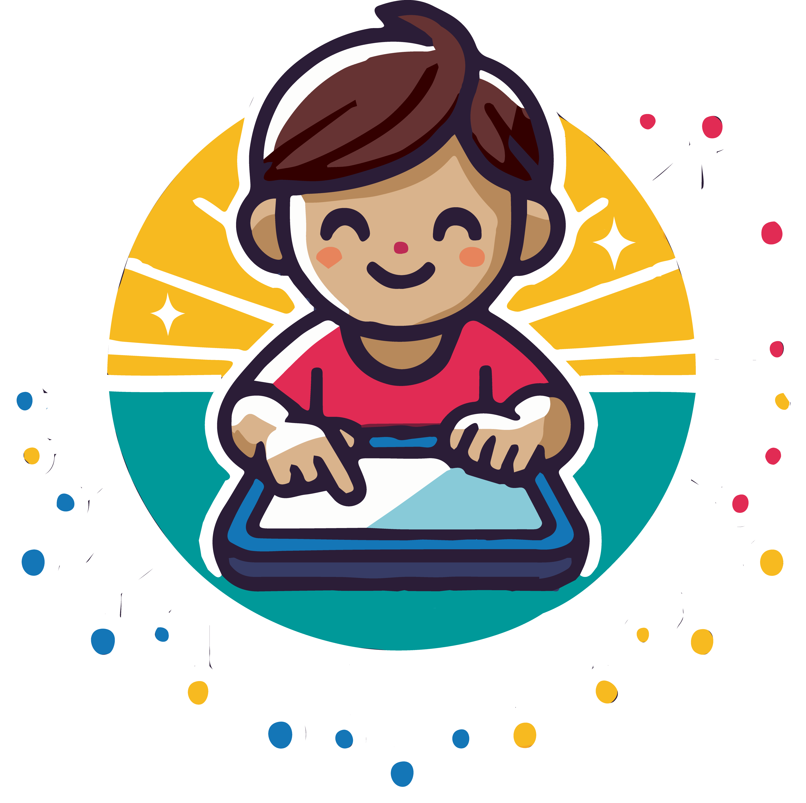

<!DOCTYPE html>
<html>
  <head>
    <title>Leseki:ds</title>
	    <link rel="stylesheet" href="jspsych/dist/jspsych.css" /> 
<link rel="stylesheet" href="css/text-container.css"> 
<link rel="stylesheet" href="css/tooltip.css">
	<link rel="stylesheet" href="css/feedback-audio.css">
	<link rel="stylesheet" href="css/univers.css">
	<link rel="stylesheet" href="css/fuel.css">
	
<!-- jsPsych + Plugins -->
<script src="/jspsych/dist/jspsych.js"></script>
<script src="/jspsych/dist/plugin-html-button-response.js"></script>
<script src="/jspsych/dist/plugin-survey-text.js"></script>

<!-- Utils, dann die API (MUSS vor start()!) -->
<script src="/js/utils.js"></script>

<!-- Falls Frontend NICHT von :3000 kommt, Base URI vor api.js setzen -->
<!-- <script>window.API_BASE = 'http://localhost:3000';</script> -->

<script src="/js/api.js"></script>

<!-- Rest deiner App -->
<script src="/js/feedback-audio.js"></script>
<script src="/js/score.js"></script>
<script src="/js/item-selection.js"></script>

<style> 
.test-item .jspsych-btn-group-flex,
.test-item .jspsych-btn-group-grid {
  display: block !important;
  text-align: left !important;
  margin-left: 0 !important;
  margin-right: 0 !important;
  max-width: none !important;
}

.test-item .jspsych-btn {
  display: block !important;
  margin: 0.75em 0;
  padding: 0.9em 1.4em !important;
}
</style>

  </head>
    <script>

const jsPsych = initJsPsych({
experiment_width: 750,
        show_progress_bar: false,
  on_close: function () { 
    fetch("/api/save", {
      method: "POST",
      headers: {
        "Content-Type": "application/json"
      },
      body: JSON.stringify(jsPsych.data.get().values())
    })
    .then(response => {
      if (!response.ok) throw new Error("Fehler beim Speichern");
      return response.text();
    })
    .then(msg => {
      console.log(" Erfolgreich gespeichert:", msg);
    })
    .catch(error => {
      console.error(" Fehler beim Speichern:", error);
    });
  }, 
  on_finish: () => jsPsych.data.displayData("json")
      });
	  
window.itemsParams = [];
window.items = [];


/// Parameters 
const ITEMS_PER_SESSION = 7;
let thetaRes = { theta: 0, se: 0.8 }
//console.log("Das ist das ausgangsniveau", thetaRes.theta );
/// Function for sampling


function getSubjectIdFromURL() {
  const params = new URLSearchParams(window.location.search);
  return params.get("id") || jsPsych.randomization.randomInt(100000000,999999999); // fallback
};

const subject_id = getSubjectIdFromURL();

jsPsych.data.addProperties({subject_id: subject_id});


      let totalPoints = 0;
      let tasksCompleted = 0;
      let scoredItems = [];

console.log('has api?', typeof window.loadSubjectSummary);
async function start() {
if (window.__LK_START_LOCK__) return;
window.__LK_START_LOCK__ = true;
 if (typeof window.loadSubjectSummary !== 'function') {
    console.error('api.js nicht geladen oder falsche Reihenfolge – loadSubjectSummary fehlt.');
    alert('Fehler: API-Funktionen nicht verfügbar. Prüfe, ob js/api.js vor diesem Script geladen wird.');
    return;
  }


  const subject_id = getSubjectIdFromURL();
  jsPsych.data.addProperties({ subject_id });

  // 1) Serverseitig vorhandene Infos parallel laden
  const [summary, thetaData, completedItems, selectionParams] = await Promise.all([
    loadSubjectSummary(subject_id),
    loadTheta(subject_id),
    loadCompletedItems(subject_id),
    loadItemParamsForSelection()   // <-- nur noch das
  ]);

  // 2) Defaults + theta
  const DEFAULTS = {
    threshold_1: -1,
    threshold_2: 0,
    first_threshold: 2000,
    points_first_try: 60,
    points_later_try: 40,
    weight: 1
  };
  const theta   = (thetaData && typeof thetaData.theta === "number") ? thetaData.theta : 0;
  const thetaSE = (thetaData && typeof thetaData.se === "number")    ? thetaData.se    : 2;

  console.log("theta", theta)

  // 3) Auswahlkandidaten zusammenbauen (nur aus selectionParams)
  const itemsWithParams = (Array.isArray(selectionParams) ? selectionParams : []).map(p => ({
    ...DEFAULTS, ...p
  }));

console.log("itemsWithParams", itemsWithParams)
console.log("completedItems", completedItems)
  // 4) bereits erledigte Items filtern
  const remainingItems = itemsWithParams.filter(it => !completedItems.includes(it.item));
console.log("remainingItems", remainingItems)
  // 5) Gewichten & ziehen
  const weights = remainingItems.map(it => normalPDF(it.threshold_2, theta, 1));
  const pick = Math.min(ITEMS_PER_SESSION, remainingItems.length);
  const selected = weightedSampleWithoutReplacement(remainingItems, weights, pick);
  const selectedIds = selected.map(it => it.item);
console.log("selectedIds", selectedIds)
  // 6) Jetzt erst Inhalte laden (JOIN-Rückgabe vom Server)
  const selectedFull = await loadItemsByIds(selectedIds);
  
  // 7) Reihenfolge wie gezogen
  const orderIndex = Object.fromEntries(selectedIds.map((id, i) => [id, i]));
  const selectedItems = selectedFull
    .map(it => ({ ...it, ...DEFAULTS })) // falls Felder fehlen
    .sort((a, b) => orderIndex[a.item] - orderIndex[b.item]);

  // 8) Globale Referenz wie bei dir
  window.items = selectedItems;

  const today = new Date().toISOString().slice(0, 10);
  const alreadyDoneToday = summary && summary.last_entry_date === today;

  const thetaLine = (thetaData && thetaData.theta != null)
    ? `<p><b>Fähigkeit (θ):</b> ${thetaData.theta} <small>(SE ${thetaData.se})</small></p>`
    : `<p><i>Noch keine verlässliche θ-Schätzung verfügbar.</i></p>`;

  const summaryBlock = summary
    ? `
      <p><b>Gesamtpunkte:</b> ${summary.total_points}</p>
      <p><b>Bearbeitete Tage:</b> ${summary.days_with_entries}</p>
      <p><b>Zuletzt aktiv:</b> ${summary.last_entry_date}</p>
      <p><b>Aufgaben bearbeitet:</b> ${summary.num_tasks_completed}</p>`
    : `<p><i>Keine bisherigen Ergebnisse.</i></p>`;

  if (alreadyDoneToday) {
    const blockTrial = {
      type: jsPsychHtmlButtonResponse,
      stimulus: () => `
	        <div class="card">
        <div class="rocket" aria-hidden="true">
          <svg viewBox="0 0 128 256" xmlns="http://www.w3.org/2000/svg">
            <g class="flame">
              <ellipse cx="64" cy="220" rx="12" ry="22" fill="#F7BA20"/>
              <ellipse cx="64" cy="228" rx="7" ry="12" fill="#E12B54" opacity=".9"/>
            </g>
            <path d="M64 16c-18 18-30 58-30 90v68h60v-68c0-32-12-72-30-90z" fill="#009999" stroke="#0b6a6a" stroke-width="4"/>
            <circle cx="64" cy="92" r="16" fill="#1476B7" stroke="#0f5790" stroke-width="4"/>
            <path d="M34 152c-10 8-16 18-16 28v8h24v-44z" fill="#E12B54"/>
            <path d="M94 152c10 8 16 18 16 28v8H86v-44z" fill="#E12B54"/>
            <path d="M64 16c10 10 18 24 22 38H42c4-14 12-28 22-38z" fill="#F7BA20"/>
          </svg>
        </div>
		
        <h2>Hallo, ${subject_id}</h2>
        <h2>Du hast für heute bereits Aufgaben bearbeitet.</h2>
        <p>Morgen hast du weiter machen.</p>
        <hr />
        <p>Bisherige Ergebnisse:</p>
     <ul>
        ${summaryBlock}
        ${thetaLine}
      </ul>
	  </div>
      `,
      choices: ["OK"],
	      on_finish: function (data) {
      data.stimulus = -9;
    },
    data: { type: 0 }
    };

    jsPsych.run([blockTrial]);
    return; // ⛔️ Test nicht fortsetzen
  }

if (remainingItems.length === 0) {
    const finishedAll = {
      type: jsPsychHtmlButtonResponse,
      stimulus: `
        <h2>Super, ${subject_id}!</h2>
        <p>Du hast bereits alle verfügbaren Aufgaben erfolgreich bearbeitet.</p>
		     <ul>
        ${summaryBlock}
        ${thetaLine}
      </ul>
      `,
      choices: ["OK"]
    };
    jsPsych.run([finishedAll]);
    return;
  }
  
const tpl = (choice, i) =>
  `<button class="jspsych-btn ${i===1 ? 'red-btn' : ''}">${choice}</button>`;

 const startTrial = {
  type: jsPsychHtmlButtonResponse,
  stimulus: () => {
    const contentWhenSummary = `
      <div class="card">
        <div class="rocket" aria-hidden="true">
          <svg viewBox="0 0 128 256" xmlns="http://www.w3.org/2000/svg">
            <g class="flame">
              <ellipse cx="64" cy="220" rx="12" ry="22" fill="#F7BA20"/>
              <ellipse cx="64" cy="228" rx="7" ry="12" fill="#E12B54" opacity=".9"/>
            </g>
            <path d="M64 16c-18 18-30 58-30 90v68h60v-68c0-32-12-72-30-90z" fill="#009999" stroke="#0b6a6a" stroke-width="4"/>
            <circle cx="64" cy="92" r="16" fill="#1476B7" stroke="#0f5790" stroke-width="4"/>
            <path d="M34 152c-10 8-16 18-16 28v8h24v-44z" fill="#E12B54"/>
            <path d="M94 152c10 8 16 18 16 28v8H86v-44z" fill="#E12B54"/>
            <path d="M64 16c10 10 18 24 22 38H42c4-14 12-28 22-38z" fill="#F7BA20"/>
          </svg>
        </div>
		

        <h2>Willkommen bei Lesekids-Quiz, ${subject_id}</h2>
        <p class="sub">Bisherige Ergebnisse:</p>
        <p>
          ${summaryBlock}
          ${thetaLine}
        </p>
        <p>Klicke auf „Start“, um fortzufahren.</p>
      </div>
    `;

    const contentNoSummary = `
      <div class="card">
        <div class="rocket" aria-hidden="true">
		          <svg viewBox="0 0 128 256" xmlns="http://www.w3.org/2000/svg">
            <g class="flame">
              <ellipse cx="64" cy="220" rx="12" ry="22" fill="#F7BA20"/>
              <ellipse cx="64" cy="228" rx="7" ry="12" fill="#E12B54" opacity=".9"/>
            </g>
            <path d="M64 16c-18 18-30 58-30 90v68h60v-68c0-32-12-72-30-90z" fill="#009999" stroke="#0b6a6a" stroke-width="4"/>
            <circle cx="64" cy="92" r="16" fill="#1476B7" stroke="#0f5790" stroke-width="4"/>
            <path d="M34 152c-10 8-16 18-16 28v8h24v-44z" fill="#E12B54"/>
            <path d="M94 152c10 8 16 18 16 28v8H86v-44z" fill="#E12B54"/>
            <path d="M64 16c10 10 18 24 22 38H42c4-14 12-28 22-38z" fill="#F7BA20"/>
          </svg></div>
        <h2>Willkommen!</h2>
        <p>Für <b>${subject_id}</b> liegen noch keine Einträge vor.</p>
        <p>${thetaLine}</p>
        <p>Klicke auf „Start“, um zu beginnen.</p>
      </div>
    `;

    return summary ? contentWhenSummary : contentNoSummary;
  },
  choices: ["Start 🚀"],
  button_html: (choice, i) => tpl(choice, i),  // KEIN %choice% mehr
  on_finish: d => { d.stimulus = -1; },
  data: { type: 0 }
};


  const main_timeline = [startTrial];
  
selectedItems.forEach((item) => {
  let repeats = 0;
  let selectedAlt = null;

  // Factory: erzeugt je nach Item-Typ das Frage-Trial
  function makeQuestionTrial(item) {
    const isOpen = item.type === "open";

    // Gemeinsamer Stimulus (mit TTS-Toolbar für que2a beim 2. Versuch)
    const stimulusHtml = function () {
      if (repeats === 0) {
        selectedAlt = null;
        return item.que;
      }
      if (!selectedAlt) selectedAlt = Math.random() < 0.5 ? "a" : "b";
      const html = selectedAlt === "a" ? item.que2a : item.que2b;

      if (selectedAlt === "a") {
        return `
   <div id="tts-audio" style="display:flex; gap:.5rem; align-items:center; margin-bottom:.5rem;"></div>
    <div id="tts-content">${html}</div>
        `;
      }
      return `
   <div class="card">${item.tbar || ""}</div>
    <div id="tts-content">${html}</div>
        `;
    };

if (!isOpen) {
  const maxAttempts = 2;

  return {
    type: jsPsychHtmlButtonResponse,
    stimulus: stimulusHtml,
    choices: item.opt,
	css_classes: ["test-item"],
    data: {
      type: 1,
      item: item.item,
      correct_response: item.cor,
      question_type: "mc"
    },
    on_load: function () {
  if (repeats > 0 && selectedAlt === "a") {
    renderFeedbackAudio({ item: item.item, mountId: 'tts-audio' });
  }
},
    on_finish: function (data) {

      const threshold = repeats === 0 ? item.first_threshold : 1000;
      data.rt_fast = data.rt < threshold;
	  
      const idx = Number.isFinite(parseInt(data.response, 10)) ? parseInt(data.response, 10) : null; 
	  data.chosen_index = idx;
	  data.chosen_text  = (idx !== null && Array.isArray(item.opt)) ? item.opt[idx] : null;
	  
	  data.fb_array = Array.isArray(item.fb) ? item.fb : null;
	  data.chosen_feedback = (data.fb_array && idx !== null) ? data.fb_array[idx] : null
	  
      data.correct = data.response == data.correct_response;
      data.repetition = repeats;

      // Scoring
      if (data.correct && !data.rt_fast) {
        if (repeats === 0) { data.score = 2; data.points_awarded = item.points_first_try; }
        else if (repeats === 1) { data.score = 1; data.points_awarded = item.points_later_try; }
        else { data.score = 0; data.points_awarded = 0; }
      } else {
        data.score = 0; data.points_awarded = 0;
      }
	  data.fb_array = Array.isArray(item.fb) ? item.fb : null;
	  data.chosen_feedback = (data.fb_array && Number.isInteger(data.chosen_index))
	  ? data.fb_array[data.chosen_index]
	  : null;


      // Versuchslogik (max. 2)
      if (!data.rt_fast && !data.correct) {
        repeats++;
        if (repeats >= maxAttempts) data.show_explain = true;
      }

      if (data.score > 0) {
        totalPoints += data.points_awarded;
        tasksCompleted++;
        scoredItems.push({
          thresholds: [item.threshold_1, item.threshold_2],
          score: data.score
        });
      }

      // Logging
      if (data.repetition === 0) {
        data.stimulus = -41;
      } else {
        data.stimulus = selectedAlt === "a" ? -42 : -43;
      }
      data.total_points = totalPoints;
      data.tasks_completed = tasksCompleted;
    }
  };
}


    // OPEN: Texteingabe über survey-text
    return {
      type: jsPsychSurveyText,
      preamble: stimulusHtml,           // zeigt denselben HTML-Block wie oben
      questions: [
        { prompt: "", rows: 1, columns: 40, required: true, name: "ans", placeholder: "Deine Antwort" }
      ],
      button_label: "Abgeben ✍",
      data: {
        type: 1,
        item: item.item,
        question_type: "open"
      },
    on_load: function () {
  if (repeats > 0 && selectedAlt === "a") {
    renderFeedbackAudio({ item: item.item, mountId: 'tts-audio' });
  }
},
      on_finish: async function (data) {
  const raw = data.response && (data.response.ans ?? data.response.Q0 ?? "");
  data.text_response = (raw ?? "").toString();

  const threshold = repeats === 0 ? item.first_threshold : 1000;
const wasCorrectBeforeScoring = false; 
  data.rt_fast = data.rt < threshold;
  data.repetition = repeats;
  
  console.log("💡 Starte LLM-Scoring für Item", item.item);
  // ←— NEU: Scoring via LLM (mit Fallback)
  const result = await scoreWithLLM({
    questionHtml: (repeats === 0 ? item.que : (selectedAlt === "a" ? item.que2a : item.que2b)),
    studentAnswer: data.text_response,
    item
  });

  data.llm_source = result.source;
  data.llm_rationale = result.rationale;
  data.normalized_answer = result.normalized_answer;

  data.correct = !!result.is_correct;

  // Punkte identisch zu vorher
  if (data.correct && !data.rt_fast) {
    if (repeats === 0) { data.score = 2; data.points_awarded = item.points_first_try; }
    else if (repeats === 1) { data.score = 1; data.points_awarded = item.points_later_try; }
    else { data.score = 0; data.points_awarded = 0; }
  } else {
    data.score = 0; data.points_awarded = 0;
  }

  // max. zwei Versuche -> Erklärung
  const maxAttempts = 2;
  if (!data.rt_fast && !data.correct) {
    repeats++;
    if (repeats >= maxAttempts) data.show_explain = true;
  }

  if (data.score > 0) {
    totalPoints += data.points_awarded;
    tasksCompleted++;
    scoredItems.push({ thresholds: [item.threshold_1, item.threshold_2], score: data.score });
  }

  if (data.repetition === 0) { data.stimulus = -41; }
  else { data.stimulus = selectedAlt === "a" ? -42 : -43; }

  data.total_points = totalPoints;
  data.tasks_completed = tasksCompleted;
}
    };
  }

  const loop_node = {
    timeline: [
      makeQuestionTrial(item),
      {
  type: jsPsychHtmlButtonResponse,
stimulus: function () {
  const last = jsPsych.data.get().last(1).values()[0] || {};
  const isMC   = last.question_type === "mc";
  const isOpen = last.question_type === "open";

  // 1) Zu schnell
  if (last.rt_fast) {
    return `
      <p>⚠️ Warnung. Du kommst vom Kurs ab.</p>
      <p style="color:orange;">Bitte nimm dir Zeit, lies genau, und antworte erst dann.</p>
    `;
  }

  // Hilfsfunktion: Item-Objekt + explain holen
  const itemObj = window.items.find(i => i.item === last.item) || {};
  const explainHtml = itemObj.explain
    ? `<div class="card">ℹ️ ${itemObj.explain}</div>`
    : "";

  // 2) MC-Items
  if (isMC) {
    // a) Korrekt
    if (last.correct) {
      const fbText = last.chosen_feedback;
      const fbHtml = fbText
        ? `<div class="card">ℹ️ ${(typeof escapeHtml === 'function' ? escapeHtml(fbText) : fbText)}</div>`
        : "";
		const fuelSteps = Math.min(90, Math.floor(last.points_awarded)); 
		const fuelHtml  = renderFuelGridHTML(fuelSteps);
      return `
		<p>✅ Erfolg!</p>
		${fbHtml}
		<p>Du bekommst <b>${last.points_awarded}</b> Plasma-Treibstoff für die Aufgabe!</p>
		${fuelHtml}
        <p>Insgesamt hast du <b>${totalPoints}</b> Plasma-Treibstoff</p>
        <p>Erledigte Aufgaben: <b>${tasksCompleted} von ${selectedItems.length}</b></p>
      `;
    }

    // b) Nach zwei Fehlversuchen: richtige Lösung + explain anzeigen
    if (last.show_explain) {
      const corIdx = Number.isInteger(itemObj.cor) ? itemObj.cor : null;
      const correctText = (corIdx !== null && Array.isArray(itemObj.opt)) ? itemObj.opt[corIdx] : "—";
      return `
        <p>⛔</p>
        <p>Die richtige Antwort ist: <b>${typeof escapeHtml === 'function' ? escapeHtml(correctText) : correctText}</b>.</p>
        ${explainHtml}
		<p>Es geht jetzt weiter mit einer anderen Aufgabe</p>
      `;
    }

    // c) Erster/zweiter Fehlversuch: optionsspezifisches Feedback
    const fbText = last.chosen_feedback;
    return fbText
      ? `<div class="card">⛔ ${(typeof escapeHtml === 'function' ? escapeHtml(fbText) : fbText)}</div>
         <p">Du erhältst jetzt eine Hilfe, für diese Aufgabe.</p>`
      : `<p>⛔ Leider falsch. Du bekommst jetzt eine Hilfe.</p>`;
  }

  // 3) Offene Items
  if (isOpen) {
    const typed = last.text_response
      ? (typeof escapeHtml === 'function' ? escapeHtml(last.text_response) : last.text_response)
      : "";
    const rationale = (last.llm_rationale || "").trim();
    const rationaleHtml = rationale
      ? `<div class="card">ℹ️ ${typeof escapeHtml === 'function' ? escapeHtml(rationale) : rationale}</div>`
      : "";
	  	const fuelSteps = Math.min(90, Math.floor(last.points_awarded)); 
		const fuelHtml  = renderFuelGridHTML(fuelSteps);

    // a) Korrekt
    if (last.correct) {
      return `
        <p>✅ Erfolg!</p>
		${rationaleHtml}
		<p>Du bekommst <b>${last.points_awarded}</b> Plasma-Treibstoff für die Aufgabe!</p>
		${fuelHtml}
        <p>Insgesamt hast du <b>${totalPoints}</b> Plasma-Treibstoff</p>
        <p>Erledigte Aufgaben: <b>${tasksCompleted} von ${selectedItems.length}</b></p>
      `;
    }

    // b) Nach zwei Fehlversuchen: LLM-Rationale + explain zusammen anzeigen
    if (last.show_explain) {
      return `
        <p> ⛔ Das war leider nicht korrekt.</p>
		<p>Deine Antwort: „${typed}“</p>        
		${explainHtml}
		<p>Es geht mit einer anderen Aufgabe weiter.</p>
      `;
    }

    // c) Erster Fehlversuch: nur kurze Rückmeldung + LLM-Begründung
    return `
      <p>⛔ Das passt noch nicht.</p>
	  <p>Deine Antwort war: „${typed}“</p>
	  ${rationaleHtml}
      <p>Du bekommst jetzt eine Hifle, versuch es nochmal.</p>
    `;
  }

  return `<p>Weiter</p>`;
},


  choices: ["Weiter 🚀"],
  on_finish: function (data) { data.stimulus = -2; },
  data: { type: 2 }
}],
loop_function: function () {
  const lastQuestion = jsPsych.data.get().last(2).values()[0]; // das Frage-Trial vor dem Feedback
  // Wiederhole nur, wenn NICHT (korrekt & nicht zu schnell) UND keine Erklärung erzwungen wurde
  return !( (lastQuestion.correct && !lastQuestion.rt_fast) || lastQuestion.show_explain === true );
}
  };

  main_timeline.push(loop_node);
});
	  
const saveAndFetchTrial = {
  type: jsPsychHtmlButtonResponse,
  stimulus: `<p>Speichere …</p>`,
  choices: [],
  on_load: async () => {
    try {
      await saveAllData();

      // kurz warten, damit die View aktualisiert ist
      await new Promise(r => setTimeout(r, 150));

      // bis zu 5x pollen
      let tries = 0;
      let s = null;
      while (tries < 5 && !s) {
        s = await loadSubjectSummary(subject_id); // gibt null wenn noch nix da
        if (!s) await new Promise(r => setTimeout(r, 200));
        tries++;
      }
      finalSummary = s;
      finalTheta   = await loadTheta(subject_id); // kann auch null sein
    } catch (e) {
      console.error("Save/Fetch-Fehler:", e);
      finalSummary = finalSummary ?? null;
      finalTheta   = finalTheta ?? null;
    } finally {
      jsPsych.finishTrial();
    }
  }
};

const endSummaryTrial = {
  type: jsPsychHtmlButtonResponse,
  stimulus: () => {
    const summaryBlock = finalSummary
      ? `
        <p><b>Gesamtpunkte:</b> ${finalSummary.total_points}</p>
        <p><b>Bearbeitete Tage:</b> ${finalSummary.days_with_entries}</p>
        <p><b>Zuletzt aktiv:</b> ${finalSummary.last_entry_date}</p>
        <p><b>Aufgaben bearbeitet:</b> ${finalSummary.num_tasks_completed}</p>`
      : `<p><i>Keine bisherigen Ergebnisse.</i></p>`;

    const thetaLine = (finalTheta && finalTheta.theta != null)
      ? `<p><b>Fähigkeit (θ):</b> ${finalTheta.theta} <small>(SE ${finalTheta.se})</small></p>`
      : `<p><i>Noch keine verlässliche θ-Schätzung verfügbar.</i></p>`;

    return `
      <h2>Session beendet – Zusammenfassung</h2>
      <ul>
        ${summaryBlock}
        ${thetaLine}
      </ul>
      <p>Danke dir! Du kannst das Fenster jetzt schließen.</p>
    `;
  },
  choices: ["Fertig"]
};

main_timeline.push(saveAndFetchTrial, endSummaryTrial);
jsPsych.run(main_timeline);
}

start();


</script>
  </body>
</html>
